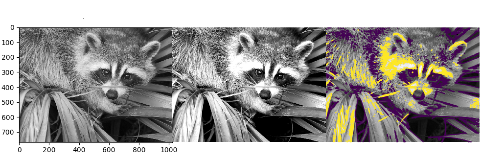
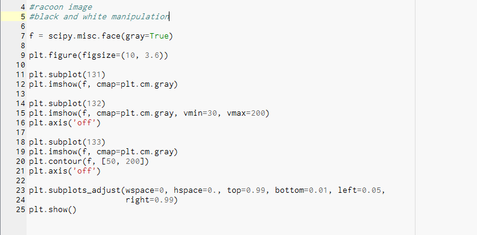
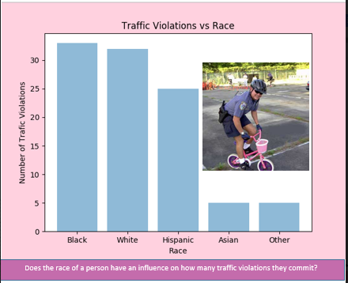
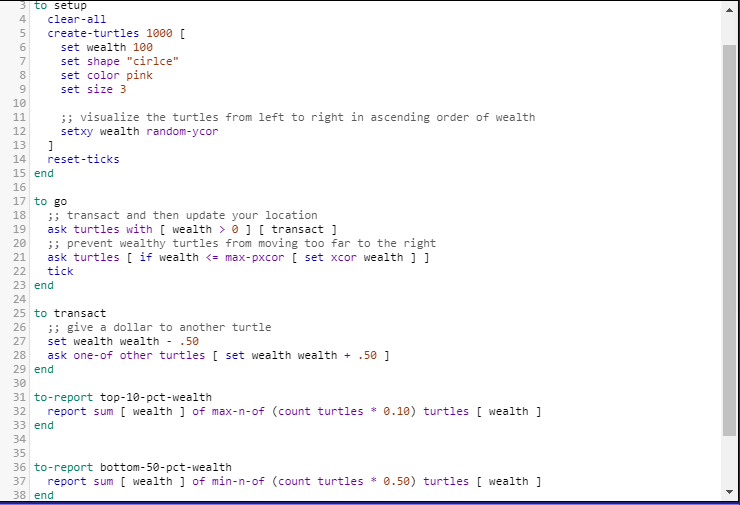
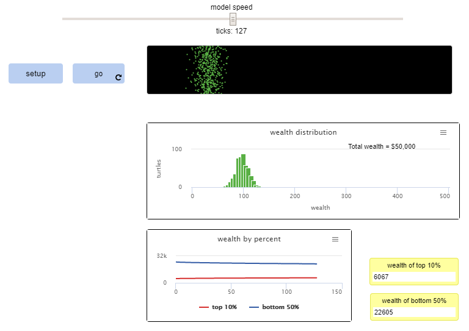
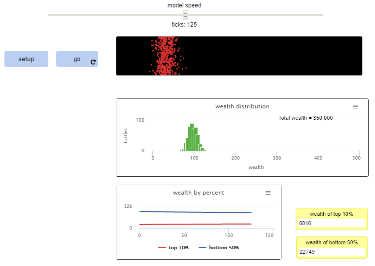

Home
Portfolio
About Me
This is my Portfolio Page!


Scratch Game!
This is my App Quiz Game!
.jpg)
The objective of this game is actually really simple. You read each question and decide if you think the answer is either 'yes' or 'no'. If you get an answer wrong then you will begin back at the start of the game!
This is my Flow Chart Quest Game!
This is my flow chart! You are stranded on an island and need to find resources in order to survive. Make good decisions!
Hangman Game!
You're life is hanging on a noose! Figure out each word in order to survive. Good luck!

Original

Modified



I attempted to answer a question to better understand how traffic violations are impacted by differenct factors, such as the race of an individual. I think the answer is yes and no. No because lots of cops only look at cars to see if they're driving badly and they don't really look at the person who's driving. Whereas the answer could also be yes because there's other cops that look at the people driving the cars. If they see a colored person driving they tend to look more closely at those cars to spot any mistakes.

